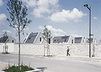

Jean-christophe Galmiche
reportages
plante photographique
divers
information
Centre Bourg Villars
Mémorial de Caen
Accueil Mairie Paris XVI
Ecole de Vancia
Lycée Paul Riquet Béziers
Insa Lyon
Villa contemporaine Lyon
Agence Crystal Paris
Crèche Montagny

Zac de Feuilly Saint-Priest
L'Homme transformé Paris
SIRTOM de Chagny